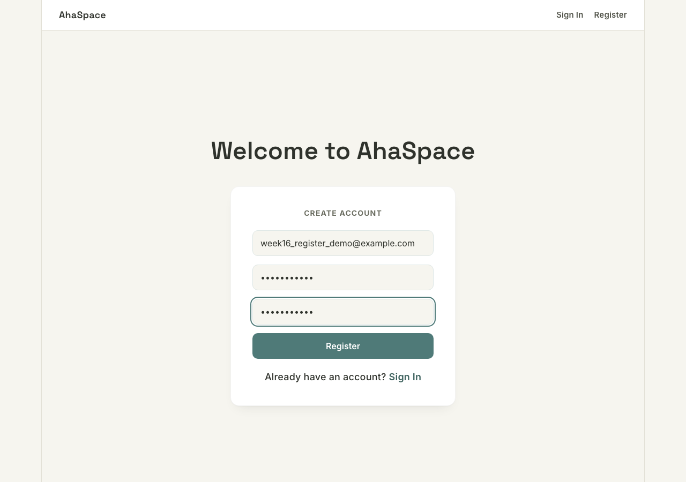
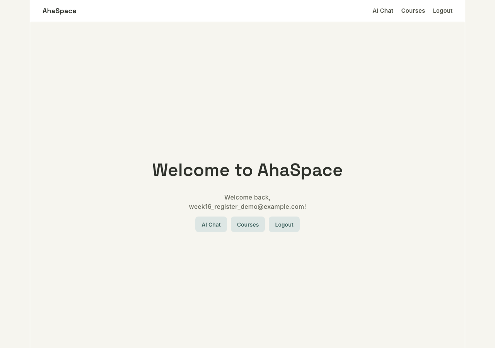
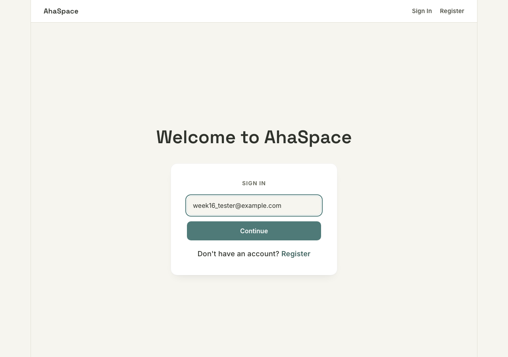
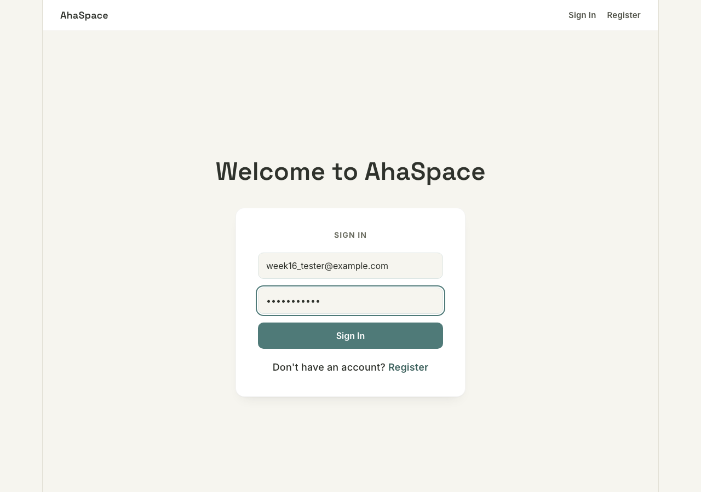
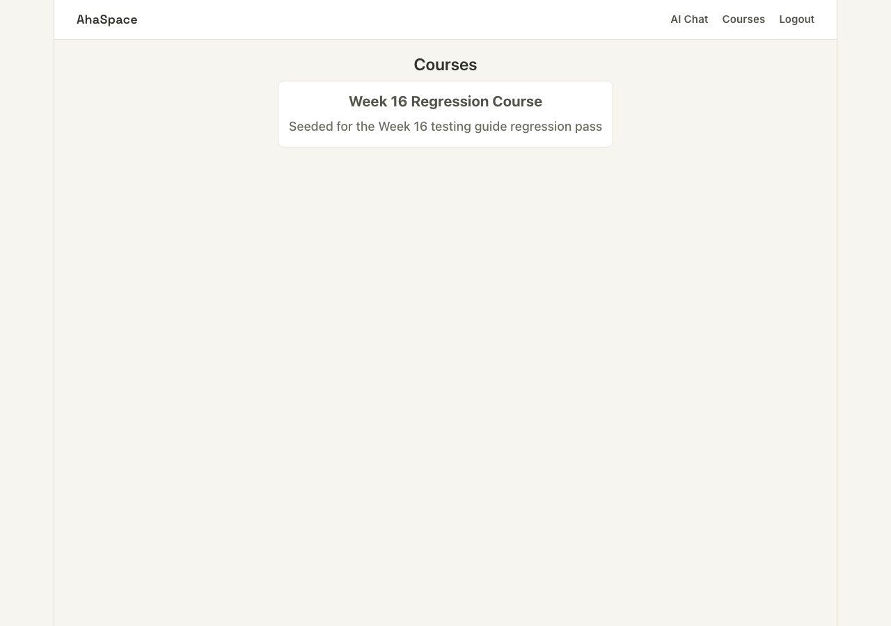
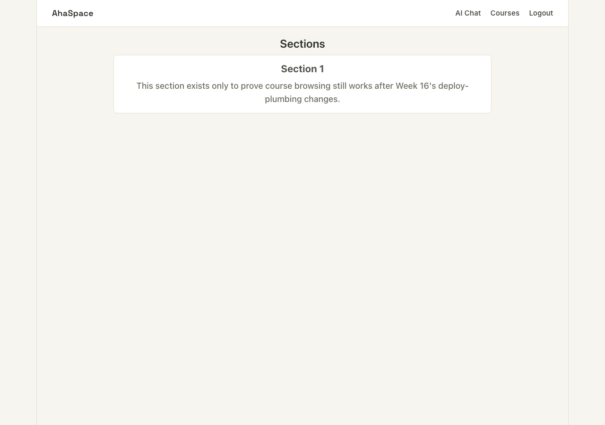
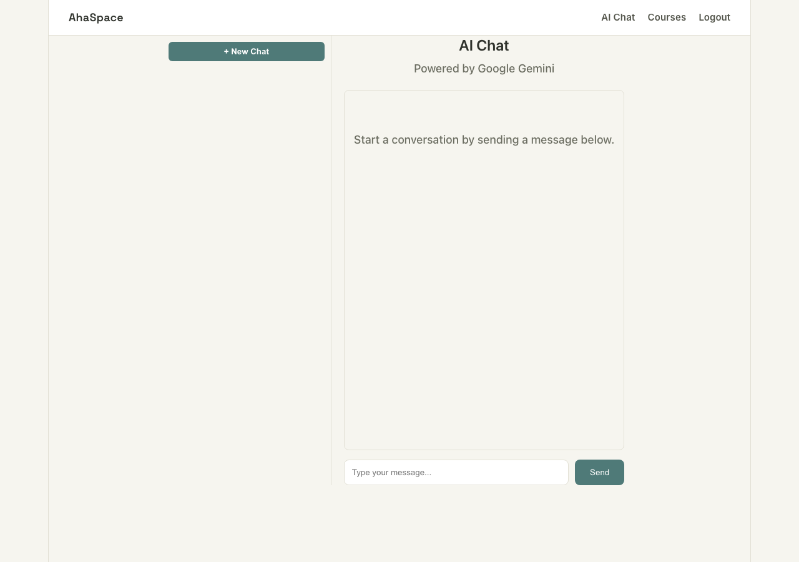
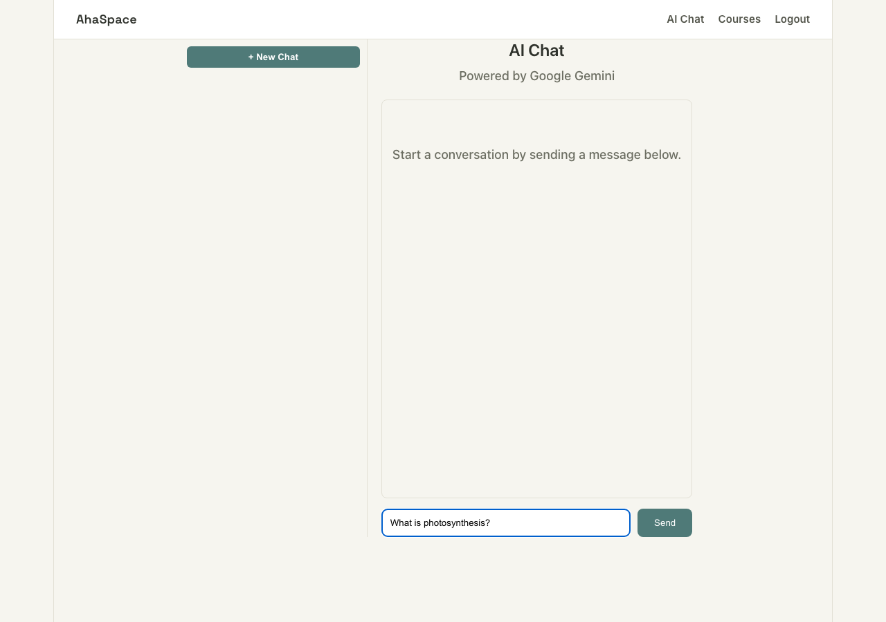
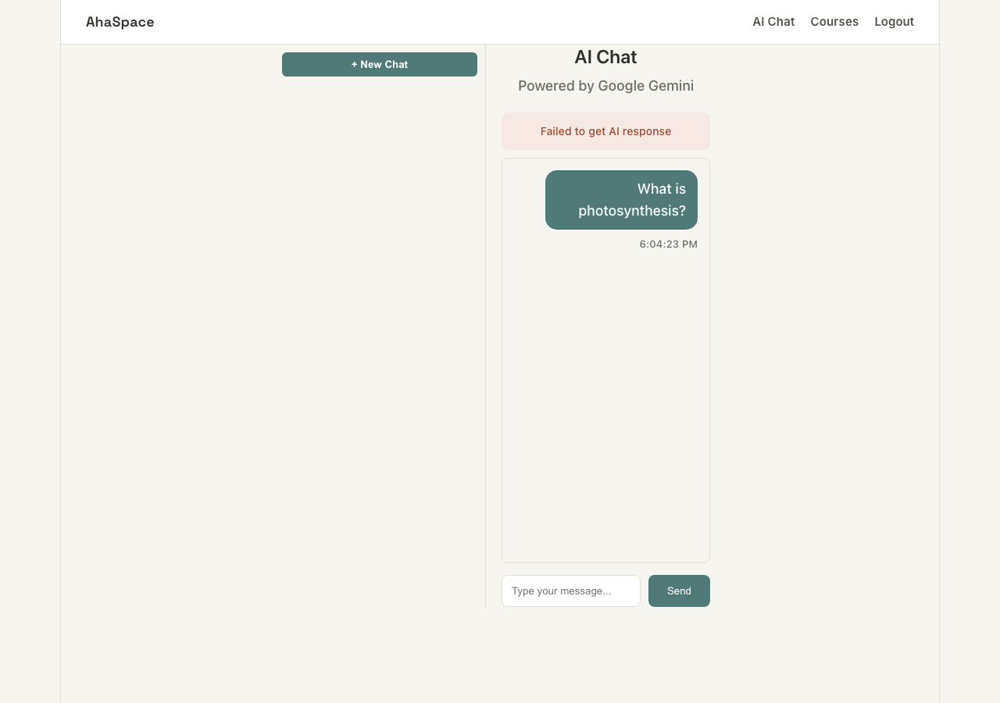

Week 16 — Production deployment
Local validation of the deploy plumbing, run end-to-end
This week is different from every prior guide: the actual GCP/Vercel provisioning is a manual process the user runs themselves — nothing here invokes real cloud infrastructure, and no Cloud SQL instance or Vercel project exists yet. What can be verified locally, and what this guide actually tests, is the code that makes that provisioning work once it happens: the new prod Spring profile's wiring, the CORS_ALLOWED_ORIGIN and VITE_API_URL environment-variable overrides both apps now read, the Dockerfile's ability to actually produce a runnable image, and — the same kind of check every prior week's guide has run — a full local regression pass proving none of this broke AhaSpaceUI's existing register/login/chat/course-browsing flow. The manual gcloud/vercel commands themselves are reproduced at the end as a runbook, clearly separated from the automated checks above it.
| Step | Expected | Result | |
|---|---|---|---|
| 01 | Setup — Postgres, backend (dev profile), frontend, Docker daemon | All four reachable before any test step runs | PASS |
| 02 | CORS_ALLOWED_ORIGIN unset — default origin allowed, all others rejected | Access-Control-Allow-Origin: http://localhost:3000; a different Origin gets 403 | PASS |
| 03 | CORS_ALLOWED_ORIGIN set — the env var, not the code, decides the allowed origin | New origin allowed, old default now rejected, no redeploy of code needed | PASS |
| 04 | docker build -t ahaspace-test . from AhaSpace/ | Multi-stage build completes, BUILD SUCCESS, final image produced | PASS |
| 05 | docker run the built image with SPRING_PROFILES_ACTIVE=prod and fake credentials | Spring context starts, prod profile active, fails only at the Cloud SQL connection step — not a Docker-level crash | PASS |
| 06 | Frontend dev server, no VITE_API_URL set | Falls back to http://localhost:8080 | PASS |
| 07 | .env.local sets VITE_API_URL, rebuild with npm run build | Built bundle's fetch target actually changes — inlined at build time, verified in the compiled JS and over the wire | PASS |
| 08–11 | Full regression: register, login, course browsing, chat | Register/login/courses unaffected by this week's refactor; chat's request routing is unaffected too (AI response itself needs a real Gemini key not present locally) | PASS |
| — | Deploy runbook (manual, user-executed) | Documentation only — not exercised by this guide | REFERENCE |
Setup
Everything this week's change touches, in the order it needs to come up. Four things running: the Docker daemon (needed for both Postgres and the Dockerfile build), Postgres itself, the backend on the existing dev profile (production's prod profile is deliberately not the one used for the regression pass — see the CORS and Docker sections below for where prod actually gets exercised), and the frontend dev server.
Start Docker Desktop and Postgres
- Confirm the Docker daemon is actually up — a build or
docker composecall against a stopped daemon fails withCannot connect to the Docker daemon, not a helpful message about starting it:docker info >/dev/null 2>&1 && echo "daemon up" || open -a Docker
- From the backend repo root:
cd AhaSpace docker compose up -d docker exec ahaspace-postgres pg_isready -U ahaspace -d enlightenment
Start the backend on the dev profile
src/main/resources/application-dev.yamlis gitignored — copy it from the example if missing, and set a realgemini.api.keyif you want AI chat responses to actually succeed (this guide's chat section runs without one — see step 11):cp src/main/resources/application-dev.yaml.example src/main/resources/application-dev.yaml
./mvnw spring-boot:run -Dspring-boot.run.profiles=dev
Wait forSERVER IS LIVE on http://localhost:8080!before sending any request below.
Start the frontend
- From
AhaSpaceUI/:npm install npm run dev
vite.config.jspins the dev server to port 3000 withstrictPort: true— this isn't new this week, but it matters more now: the backend's default CORS origin (cors.allowed-origin's fallback inapplication.yaml) is still hardcoded to expect exactlyhttp://localhost:3000, so a silent fallback to 3001 would break every request with a CORS error that has nothing to do with this week's changes.
New behavior: CORS origin via CORS_ALLOWED_ORIGIN
SecurityConfig.java's corsConfigurationSource() used to hardcode configuration.setAllowedOrigins(List.of("http://localhost:3000")) — the only frontend that could ever call this API was baked into the compiled code. It now reads a @Value("${cors.allowed-origin}")-bound field instead, and the base application.yaml supplies cors.allowed-origin: ${CORS_ALLOWED_ORIGIN:http://localhost:3000} — an env var with the same old value as its default, so nothing changes for anyone who doesn't set it. This is the exact same @Value + env-var-with-default mechanism application-prod.yaml relies on for its Cloud SQL and Gemini settings (see the Docker section below) — proving it here, against a real running server and a real HTTP response header, is a faithful stand-in for a mechanism that can't be exercised against real Cloud SQL locally.
Default behavior — no CORS_ALLOWED_ORIGIN set
Backend started with no CORS_ALLOWED_ORIGIN in the environment, so cors.allowed-origin resolves to its fallback, http://localhost:3000. Two real preflight (OPTIONS) requests against the same running server, same endpoint, different Origin headers.
$ curl -s -i -X OPTIONS http://localhost:8080/api/courses \ -H "Origin: http://localhost:3000" \ -H "Access-Control-Request-Method: GET" HTTP/1.1 200 Vary: Origin Vary: Access-Control-Request-Method Vary: Access-Control-Request-Headers Access-Control-Allow-Origin: http://localhost:3000 Access-Control-Allow-Methods: GET,POST,PUT,DELETE,OPTIONS X-Content-Type-Options: nosniff X-Frame-Options: SAMEORIGIN Content-Length: 0
$ curl -s -i -X OPTIONS http://localhost:8080/api/courses \ -H "Origin: http://localhost:5555" \ -H "Access-Control-Request-Method: GET" HTTP/1.1 403 Vary: Origin Vary: Access-Control-Request-Method Vary: Access-Control-Request-Headers X-Content-Type-Options: nosniff X-Frame-Options: SAMEORIGIN Transfer-Encoding: chunked Invalid CORS request
This confirms the fallback default reproduces the exact old hardcoded behavior — one allowed origin, everything else rejected at the CORS layer before the request ever reaches a controller.
Recreate this step
- Make sure no
CORS_ALLOWED_ORIGINis set:unset CORS_ALLOWED_ORIGIN
- With the backend running (Setup above), send both
curlcalls above.
Setting CORS_ALLOWED_ORIGIN — the env var actually decides, not the code
Same backend, restarted with CORS_ALLOWED_ORIGIN=https://ahaspace-ui.vercel.app set (a placeholder standing in for a real future Vercel URL — see the Deploy Runbook below for where this value comes from for real). No code changed between this step and the one above; only the environment did.
$ CORS_ALLOWED_ORIGIN=https://ahaspace-ui.vercel.app \ ./mvnw spring-boot:run -Dspring-boot.run.profiles=dev ... $ curl -s -i -X OPTIONS http://localhost:8080/api/courses \ -H "Origin: https://ahaspace-ui.vercel.app" \ -H "Access-Control-Request-Method: GET" HTTP/1.1 200 Vary: Origin Vary: Access-Control-Request-Method Vary: Access-Control-Request-Headers Access-Control-Allow-Origin: https://ahaspace-ui.vercel.app Access-Control-Allow-Methods: GET,POST,PUT,DELETE,OPTIONS X-Content-Type-Options: nosniff X-Frame-Options: SAMEORIGIN Content-Length: 0
$ curl -s -i -X OPTIONS http://localhost:8080/api/courses \ -H "Origin: http://localhost:3000" \ -H "Access-Control-Request-Method: GET" HTTP/1.1 403 Vary: Origin Vary: Access-Control-Request-Method Vary: Access-Control-Request-Headers X-Content-Type-Options: nosniff X-Frame-Options: SAMEORIGIN Transfer-Encoding: chunked Invalid CORS request
This is the whole point of the change: localhost:3000, which was unconditionally allowed before this week (hardcoded in compiled code), is now rejected the moment a different CORS_ALLOWED_ORIGIN is set — because it's no longer special-cased anywhere, it's just whatever the current value of one env var says. This is exactly the redeploy in Backend step F of the Deploy Runbook below: swapping CORS_ALLOWED_ORIGIN from a placeholder to the real Vercel URL needs no code change and no rebuild, only gcloud run services update --update-env-vars.
Recreate this step
- Stop the backend, restart it with the env var set:
lsof -ti:8080 | xargs kill -9 2>/dev/null; true CORS_ALLOWED_ORIGIN=https://ahaspace-ui.vercel.app \ ./mvnw spring-boot:run -Dspring-boot.run.profiles=dev
- Send both
curlcalls above. - Restart the backend once more with no
CORS_ALLOWED_ORIGINset before continuing to the regression section below — the frontend dev server atlocalhost:3000needs the default origin allowed again.
Docker build verification
Docker Desktop was available locally (docker --version → Docker version 29.1.2), so this section ran for real — a genuine docker build and docker run, not a description of what should happen. If Docker isn't installed when following this guide, skip straight to the "If Docker isn't available" note at the end of this section.
Multi-stage build — real output, full run
From AhaSpace/. The first stage (maven:3.9-eclipse-temurin-21) runs ./mvnw -B clean package -DskipTests to produce the jar; the second (eclipse-temurin:21-jre-alpine) copies only that jar in. Tests are skipped here deliberately — they already ran and passed in the ./mvnw -o test step Phase 6 verification captured (111/111); re-running them inside the image build would just slow down every deploy for no new information.
$ docker build -t ahaspace-test .
...
#12 [build 4/6] RUN ./mvnw -B dependency:go-offline
...
#14 [build 6/6] RUN ./mvnw -B clean package -DskipTests
#14 7.610 [INFO] skip non existing resourceDirectory /app/src/test/resources
#14 8.061 [INFO] --- surefire:3.1.2:test (default-test) @ enlightenment ---
#14 8.061 [INFO] Tests are skipped.
#14 8.135 [INFO] Building jar: /app/target/enlightenment-0.0.1-SNAPSHOT.jar
#14 8.345 [INFO] Replacing main artifact /app/target/enlightenment-0.0.1-SNAPSHOT.jar with repackaged archive, adding nested dependencies in BOOT-INF/.
#14 8.345 [INFO] BUILD SUCCESS
#14 DONE 8.4s
#15 [stage-1 3/3] COPY --from=build /app/target/enlightenment-0.0.1-SNAPSHOT.jar app.jar
#15 DONE 0.1s
#16 exporting to image
#16 naming to docker.io/library/ahaspace-test:latest done
#16 DONE 1.5sFinal image: 429MB (docker images ahaspace-test) — one JRE plus one jar, not the ~1GB+ Maven/JDK build toolchain the first stage used, confirming the multi-stage decision from decisions.md actually paid off rather than being purely aspirational.
Recreate this step
cd AhaSpace docker build -t ahaspace-test . docker images ahaspace-test
Running the built image — gets to Spring Boot startup, fails only at Cloud SQL
The task here is narrow and deliberate: confirm the image runs and the prod profile activates — not that it fully boots, which is impossible without a real Cloud SQL instance and real GCP credentials, neither of which exist yet. Ran with SPRING_PROFILES_ACTIVE=prod and syntactically-valid but fake values for every required env var (JWT_SECRET, DB_PASSWORD, CLOUD_SQL_CONNECTION_NAME=fake:fake:fake, GEMINI_API_KEY) — enough for Spring's placeholder resolution to succeed, not enough for an actual database connection to succeed.
$ docker run -e SPRING_PROFILES_ACTIVE=prod \ -e JWT_SECRET=test-secret-at-least-32-characters-long \ -e DB_PASSWORD=x -e CLOUD_SQL_CONNECTION_NAME=fake:fake:fake \ -e GEMINI_API_KEY=fake ahaspace-test ... 2026-07-23 22:05:21.830 INFO c.k.e.EnlightenmentApplication - Starting EnlightenmentApplication v0.0.1-SNAPSHOT using Java 21.0.11 2026-07-23 22:05:21.830 INFO c.k.e.EnlightenmentApplication - The following 1 profile is active: "prod" 2026-07-23 22:05:22.483 INFO o.s.b.w.e.tomcat.TomcatWebServer - Tomcat initialized with port 8080 (http) 2026-07-23 22:05:23.263 INFO com.zaxxer.hikari.HikariDataSource - HikariPool-1 - Starting...
2026-07-23 22:05:23.818 ERROR com.zaxxer.hikari.pool.HikariPool - HikariPool-1 - Exception during pool initialization. org.postgresql.util.PSQLException: ... Caused by: java.lang.RuntimeException: Unable to obtain credentials to communicate with the Cloud SQL API at com.google.cloud.sql.core.ApplicationDefaultCredentialFactory.getCredentials(...) at com.google.cloud.sql.postgres.SocketFactory.createSocket(SocketFactory.java:81) at org.postgresql.core.v3.ConnectionFactoryImpl.tryConnect(...) Caused by: java.io.IOException: Your default credentials were not found. To set up Application Default Credentials for your environment, see https://cloud.google.com/docs/authentication/external/set-up-adc. ... 2026-07-23 22:05:25.233 ERROR o.s.boot.SpringApplication - Application run failed org.springframework.beans.factory.BeanCreationException: Error creating bean with name 'entityManagerFactory' ...
Read bottom-to-top, this is exactly the right failure at exactly the right layer: "The following 1 profile is active: prod" proves SPRING_PROFILES_ACTIVE=prod selected application-prod.yaml correctly; Tomcat initialized with port 8080 proves the container itself, the jar, and the JRE are all fine — this is not a Docker-level failure (bad ENTRYPOINT, missing jar, wrong Java version, port misconfiguration). The failure is specifically postgres-socket-factory trying to authenticate to the real Cloud SQL Admin API using Application Default Credentials, which only exist inside a real GCP environment (or after a local gcloud auth application-default login, deliberately not done here since this guide isn't supposed to touch real GCP). This is the correct, expected failure mode for "an image built and run entirely outside GCP" and is not something to fix before shipping — it resolves itself the moment the image actually runs on Cloud Run with --add-cloudsql-instances, per Backend step E of the runbook below.
Recreate this step
docker run -e SPRING_PROFILES_ACTIVE=prod \ -e JWT_SECRET=test-secret-at-least-32-characters-long \ -e DB_PASSWORD=x -e CLOUD_SQL_CONNECTION_NAME=fake:fake:fake \ -e GEMINI_API_KEY=fake ahaspace-test
- Expect it to print
The following 1 profile is active: "prod", thenTomcat initialized with port 8080, then fail a few seconds later on the Cloud SQL connection. Any other failure shape (image won't start at all,exec format error, immediate crash before the profile line prints) means the Docker build itself is broken, not this expected credentials gap. - Clean up:
docker rm -f $(docker ps -aq --filter ancestor=ahaspace-test) 2>/dev/null; true docker rmi ahaspace-test
docker build -t ahaspace-test . from AhaSpace/ (expect BUILD SUCCESS and a final image around 400-450MB), then docker run it with the fake env vars shown in step 05 above (expect it to reach Tomcat initialized with port 8080 before failing on the Cloud SQL connection — any earlier or different failure means something about the Dockerfile itself, not the expected credentials gap, is broken).
New behavior: API_BASE_URL fallback and override
New src/config.js: export const API_BASE_URL = import.meta.env.VITE_API_URL || 'http://localhost:8080'. Every one of the 7 source files that used to hardcode http://localhost:8080 in a fetch() call now imports this and interpolates it instead. import.meta.env.VITE_API_URL is Vite's build-time environment variable substitution — it's not read at runtime like a Node process.env lookup, it's a literal text replacement Vite performs while bundling, which is why the override step below requires an actual rebuild, not just a page refresh.
Fallback — no VITE_API_URL, dev server hits localhost:8080
No .env.local exists yet at this point. Real network requests captured from the running dev server (localhost:3000) during the register/login flow below — every one goes to the bare localhost:8080 fallback baked into config.js.
POST http://localhost:8080/api/auth/register POST http://localhost:8080/api/auth/login GET http://localhost:8080/api/courses GET http://localhost:8080/api/chat/sessions
Recreate this step
.env.local exists in AhaSpaceUI/ (ls .env.local should fail), start the dev server, open browser devtools' Network tab, and use the app normally — every API call's target host should read localhost:8080.Override — .env.local + rebuild actually changes the compiled target
Created AhaSpaceUI/.env.local with VITE_API_URL=http://127.0.0.1:8080 — same backend, deliberately a different-looking host string (127.0.0.1 instead of localhost) purely so the change is unambiguous in the built output, not because the two hosts behave differently here. Ran npm run build, then grepped the compiled bundle directly, before even loading a browser — proof this is a compile-time substitution, not something a screenshot alone could distinguish from a runtime lookup.
$ cat .env.local VITE_API_URL=http://127.0.0.1:8080 $ npm run build ✓ built in 205ms $ grep -o "127.0.0.1:8080" dist/assets/index-*.js | wc -l 2 $ grep -o "localhost:8080" dist/assets/index-*.js | wc -l 0
Then served the real production build with npm run preview --port 4173 (backend's CORS_ALLOWED_ORIGIN temporarily pointed at http://localhost:4173 for this one check, same env-var mechanism as step 03 above) and logged in through it for real — this is the actual compiled app talking to the actual backend, not a mocked request.
POST http://127.0.0.1:8080/api/auth/login ← was http://localhost:8080 before the rebuildFull round trip succeeded — login through the rebuilt bundle reached the backend at the overridden host, got a valid JWT back, and redirected home exactly like every other login in this guide. This is the same mechanism Frontend step 4 of the Deploy Runbook below relies on: vercel env add VITE_API_URL production followed by vercel --prod is this exact .env.local + rebuild sequence, just with Vercel running the build instead of a local npm run build.
Recreate this step
echo "VITE_API_URL=http://127.0.0.1:8080" > .env.local npm run build grep -c "127.0.0.1:8080" dist/assets/index-*.js
- Serve the build and temporarily widen backend CORS to match:
# in AhaSpace/, restart the backend: CORS_ALLOWED_ORIGIN=http://localhost:4173 ./mvnw spring-boot:run -Dspring-boot.run.profiles=dev # in AhaSpaceUI/, in another terminal: npm run preview -- --port 4173
- Open
http://localhost:4173/login, log in with an already-registered account, watch the Network tab for the request host. - Clean up afterward: delete
.env.local, restart the backend with noCORS_ALLOWED_ORIGINset (needed again for the plainlocalhost:3000dev server below).
Full regression: register, login, chat, course browsing
The same kind of pass every prior week's guide has run, and the most important section for answering one question: did refactoring 10 hardcoded URLs into one shared config.js constant, across 7 source files and 3 test files, change any actual behavior? Everything below runs against the plain dev-profile backend (no CORS override, no .env.local — the default fallback path from step 06) through the normal npm run dev server at localhost:3000, exactly like every prior week.
Register — real account, real redirect
POST /api/auth/register through Register.jsx, which now imports API_BASE_URL from config.js instead of hardcoding the URL. A 201 response auto-logs-in (same as every prior week) and redirects to the home page.


Recreate this step
/register, fill in a new email, a password 6+ characters, matching confirm-password, submit. Expect redirect to / with a "Welcome back" message.Login — two-step flow, unchanged
Login.jsx's two-step email-then-password flow (from Week 14) is untouched by this week's changes beyond the one line that builds the fetch URL. Logged in as the week16_tester@example.com account used throughout the rest of this guide.



Recreate this step
/login, enter a registered email, click Continue, enter the password, click Sign In. Expect redirect to /.Course browsing — list and drill into sections
There's no course-seeding endpoint or startup data (by design, same as every prior week touching this table) — a fresh dev database shows "No courses available yet" on /courses, which is itself the correct, unbroken behavior for CourseList.jsx's GET ${API_BASE_URL}/api/courses call. One course and section were inserted directly via SQL (same approach Week 9 and Week 10 used) purely so this guide could also show the drill-down into CourseSections.jsx, which has its own independent API_BASE_URL import.


Recreate this step
- Seed one course and section (skip if any already exist in your dev Postgres volume):
docker exec ahaspace-postgres psql -U ahaspace -d enlightenment -c \ "INSERT INTO courses (title, description) VALUES ('Test Course', 'Seeded for testing');" docker exec ahaspace-postgres psql -U ahaspace -d enlightenment -c \ "INSERT INTO sections (content, course_id) VALUES ('Test section content.', 1);" - Go to
/courseswhile logged in, confirm the course card renders, click into it, confirm the section renders.
Chat — request routing works, AI response needs a real key (unrelated to this week)
Sending a chat message hits POST ${API_BASE_URL}/api/chat — the request itself reaches the backend correctly (same host, same CORS pass, same JWT auth as every other call in this guide). What fails is the AI response: this local dev environment's application-dev.yaml has gemini.api.key: YOUR_GEMINI_API_KEY_HERE, a placeholder, not a real Gemini key. This is a pre-existing local-setup gap documented since Week 10's guide ("Needs a real gemini.api.key configured... without one this returns 500 instead"), not something Week 16 introduced or could fix — it's orthogonal to the URL-routing refactor this week actually made.



The user's own message bubble rendering, with a timestamp, confirms the POST reached the backend and got a response back (an error response, but a real HTTP round trip, not a network-level failure) — the request-routing refactor this week made is provably fine. To see a real AI response instead of this error, follow the Setup section's note about setting a real gemini.api.key in application-dev.yaml, exactly as every prior week's guide has required.
Recreate this step
/chat while logged in, type any message, click Send. Without a real Gemini key configured, expect a "Failed to get AI response" banner — this is the correct, pre-existing behavior, not a regression.Deploy Runbook (manual, user-executed — not verified by this guide)
Everything in this section is documentation, reproduced from plan.md for a single reference point — none of it was run, and none of it can be run from this guide: it provisions real GCP and Vercel resources under the user's own account and billing. Follow it in order; the deploy sequence resolves a circular dependency (the backend's CORS needs the frontend's URL, the frontend's API base needs the backend's URL, and neither exists until the other deploys once) by deploying the backend first with a placeholder CORS origin, then the frontend against that backend's real URL, then redeploying the backend with the frontend's real URL.
Backend A — Enable required GCP APIs
gcloud config set project PROJECT_ID gcloud services enable sqladmin.googleapis.com run.googleapis.com secretmanager.googleapis.com artifactregistry.googleapis.com cloudbuild.googleapis.com
Backend B — Create the Cloud SQL instance and database
gcloud sql instances create ahaspace-db \ --database-version=POSTGRES_16 --tier=db-f1-micro --region=REGION gcloud sql databases create ahaspace --instance=ahaspace-db gcloud sql instances describe ahaspace-db --format='value(connectionName)'
Record the output as CLOUD_SQL_CONNECTION_NAME (PROJECT_ID:REGION:ahaspace-db) — this is the exact value application-prod.yaml's cloudSqlInstance= JDBC parameter reads, verified against the real file in the Docker section above.
Backend C — Create the least-privilege app DB user
gcloud sql users create ahaspace_app --instance=ahaspace-db --password='<GENERATED_DB_PASSWORD>'
Then, connected as postgres (gcloud sql connect ahaspace-db --user=postgres), grant only on the ahaspace database:
GRANT ALL PRIVILEGES ON DATABASE ahaspace TO ahaspace_app; GRANT ALL ON SCHEMA public TO ahaspace_app;
Backend D — Create Secret Manager secrets
printf '%s' '<GENERATED_DB_PASSWORD>' | gcloud secrets create db-password --data-file=- printf '%s' '<JWT_SECRET_32+_chars>' | gcloud secrets create jwt-secret --data-file=- printf '%s' '<GEMINI_API_KEY>' | gcloud secrets create gemini-api-key --data-file=-
Grant the Cloud Run runtime service account roles/secretmanager.secretAccessor on each of the three secrets.
Backend E — First Cloud Run deploy, placeholder CORS
gcloud run deploy ahaspace \ --source AhaSpace \ --region REGION --allow-unauthenticated \ --add-cloudsql-instances PROJECT_ID:REGION:ahaspace-db \ --set-env-vars SPRING_PROFILES_ACTIVE=prod,CLOUD_SQL_CONNECTION_NAME=PROJECT_ID:REGION:ahaspace-db,CORS_ALLOWED_ORIGIN=https://placeholder.vercel.app \ --set-secrets JWT_SECRET=jwt-secret:latest,GEMINI_API_KEY=gemini-api-key:latest,DB_PASSWORD=db-password:latest
Record the printed service URL as CLOUD_RUN_URL. This is the deploy where the Docker section's local "credentials not found" failure above resolves for real — --add-cloudsql-instances gives the running container the Cloud SQL Auth Proxy connection the socket factory needs, which a local docker run can never provide.
Frontend — Deploy to Vercel with the real backend URL
cd AhaSpaceUI vercel login vercel link vercel env add VITE_API_URL production # paste CLOUD_RUN_URL from step E, no trailing slash vercel --prod
VITE_API_URL must be set before vercel --prod runs its build — this is the exact same build-time-inlining behavior proven locally in step 07 above, just with Vercel's build server running npm run build instead of a local one. Record the printed production URL as VERCEL_URL.
Backend F — Redeploy with the real CORS origin
gcloud run services update ahaspace --region REGION \ --update-env-vars CORS_ALLOWED_ORIGIN=https://<real-vercel-url>
This single flag change is exactly what step 03 above proved locally: no code change, no rebuild, just a new value for the same env var SecurityConfig already reads.
G — Smoke test against the live app
Against VERCEL_URL: register, log in, send a chat message (a real Gemini key is in Secret Manager by this point, so this should succeed unlike step 11 above), browse courses. This is the one step in the runbook that's a direct rerun of this guide's own regression section (steps 08-11), just pointed at the real deployed URLs instead of localhost.
decisions.md is explicit that the user runs these themselves — Claude's role was providing the exact commands, not executing them. Nothing in this guide's automated sections above required or assumed any of these resources exist.
Common errors and suggested solutions
Stale-process and port-conflict entries carried forward from Week 15's Troubleshooting section still apply unchanged and aren't repeated here. Everything below is specific to this week's changes.
Invalid CORS request from the frontend dev server after testing the CORS override
If step 03 or step 07's backend restart (with CORS_ALLOWED_ORIGIN set to something other than http://localhost:3000) is still running when the regression section's npm run dev frontend tries to talk to it, every request fails CORS — the backend is correctly enforcing whatever origin it was last started with, and it's no longer the frontend's.
Fix applied
CORS_ALLOWED_ORIGIN in the environment: lsof -ti:8080 | xargs kill -9 2>/dev/null; true unset CORS_ALLOWED_ORIGIN ./mvnw spring-boot:run -Dspring-boot.run.profiles=dev
Cannot connect to the Docker daemon when running docker build or docker compose up
Docker Desktop isn't just installed, it needs to actually be running — docker --version succeeding only proves the CLI binary exists, not that the daemon it talks to is up. Hit this directly while preparing this guide: docker compose up -d failed with dial unix /Users/.../docker.sock: connect: no such file or directory until Docker Desktop was launched.
Fix applied
open -a Docker # then wait for the daemon: until docker info >/dev/null 2>&1; do sleep 2; done
Built frontend bundle still contains the old localhost:8080 host string
import.meta.env.VITE_API_URL is substituted once, at build time — .env.local created or edited after npm run build already ran has no effect on the existing dist/ output, and a running npm run dev or npm run preview process started before the file changed won't pick it up either.
Fix applied
- Confirm
.env.localexists and is correct before building:cat .env.local
- Rebuild:
npm run build grep -c "localhost:8080" dist/assets/index-*.js # expect 0 if VITE_API_URL is set to something else
- If serving via
npm run preview, restart that process after every rebuild — it serves whatever was indist/at the moment it started, not live.
Chat always returns Failed to get AI response locally
Expected, not a bug — see step 11 above. application-dev.yaml's gemini.api.key is a placeholder (YOUR_GEMINI_API_KEY_HERE) unless it's been manually edited to a real key. This has been true since Week 10 and is unrelated to this week's URL-routing refactor.
Fix applied
src/main/resources/application-dev.yaml, set gemini.api.key to a real Gemini API key, restart the backend.